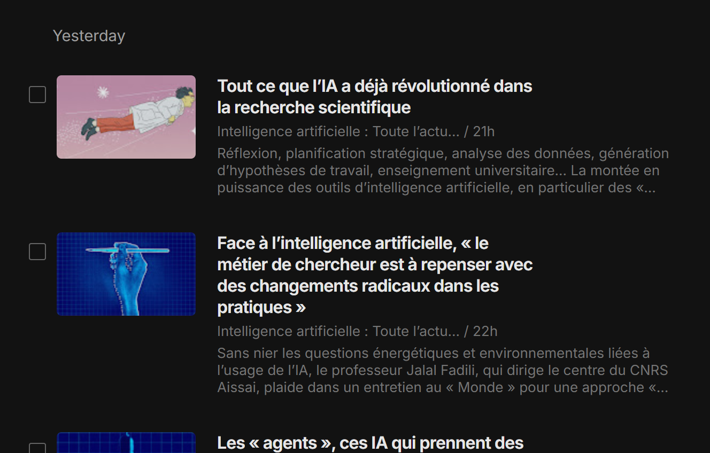

Recherche
Pour enrichir ma veille, je commence par rechercher des articles ayant un rapport avec cette dernière en me rendant dans les actualités liées à mon feed Feedly.
Sélection
Ensuite, une fois que j'ai trouvé un article qui me paraît intéressant, soit je le mets dans les articles "à lire plus tard", soit je le lis et l'enregistre dans mon Notion.

Enregistement
Pour finir, afin d'enregistrer un article, je renseigne la date de publication, le titre, l'auteur, la langue, le type d'article et la source. Sans oublier de noter un récapitulatif de l'article.